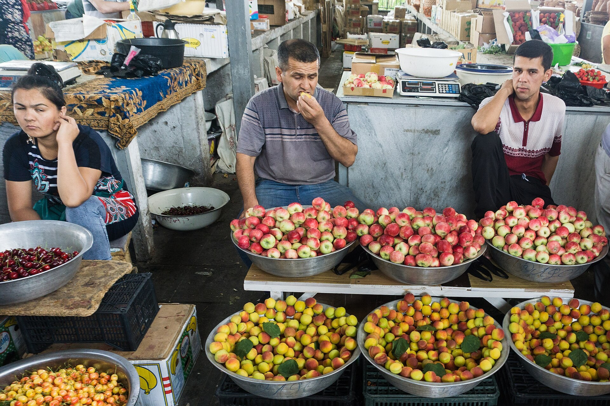

В Узбекистане с 15 октября стартовала общенациональная бизнес-перепись
Согласно постановлению правительства № 557, общенациональная бизнес-перепись проходит с 15 октября по 30 ноября 2026 года. Она охватывает все юрлица, предпринимателей и неформальный бизнес; результаты опубликуют до 1 сентября 2027 года. Ненаблюдаемая экономика оценивается примерно в 246 трлн сумов (23%).

В Узбекистане стартовала общенациональная бизнес-перепись. Порядок её проведения утверждён постановлением правительства № 557 от 9 октября 2026 года. Перепись проходит с 15 октября по 30 ноября, отчётная дата (срез) — 1 октября, 00:00.
Кого охватывает
Перепись охватывает юридические лица, индивидуальных предпринимателей, дехканские хозяйства, самозанятых и бизнес, работающий без государственной регистрации. Юрлица регистрируются через портал отчётности (hisobot.stat.uz), самозанятые — через census.stat.uz; переписчики также посещают лично с 9:00 до 18:00. Обращения принимаются по короткому номеру 1851.
Зачем это нужно
По данным Комитета по статистике, ненаблюдаемая экономика составляет около 246 трлн сумов — примерно 23%. Из 15,2 млн занятых у 6,5 млн (42%) доходы учитываются не полностью, и один из каждых четырёх-пяти сумов оборота находится вне официальной статистики.

Что дальше
До 5% зарегистрированных субъектов пройдут выборочную проверку в течение 10 дней после завершения переписи. Итоговые результаты опубликуют до 1 сентября 2027 года.